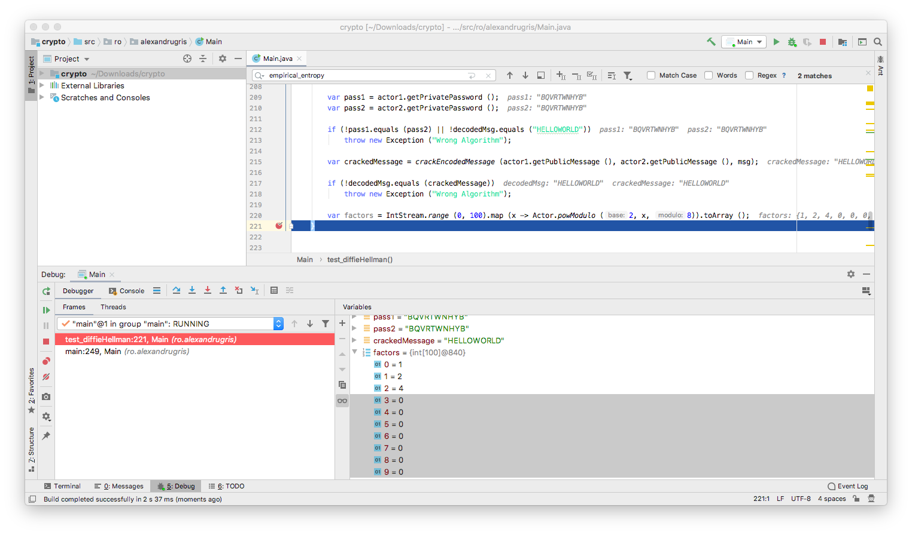
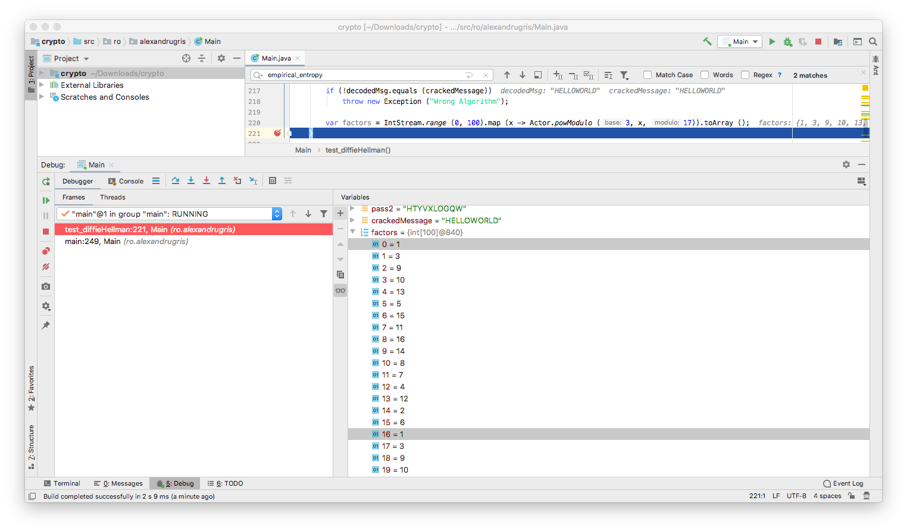
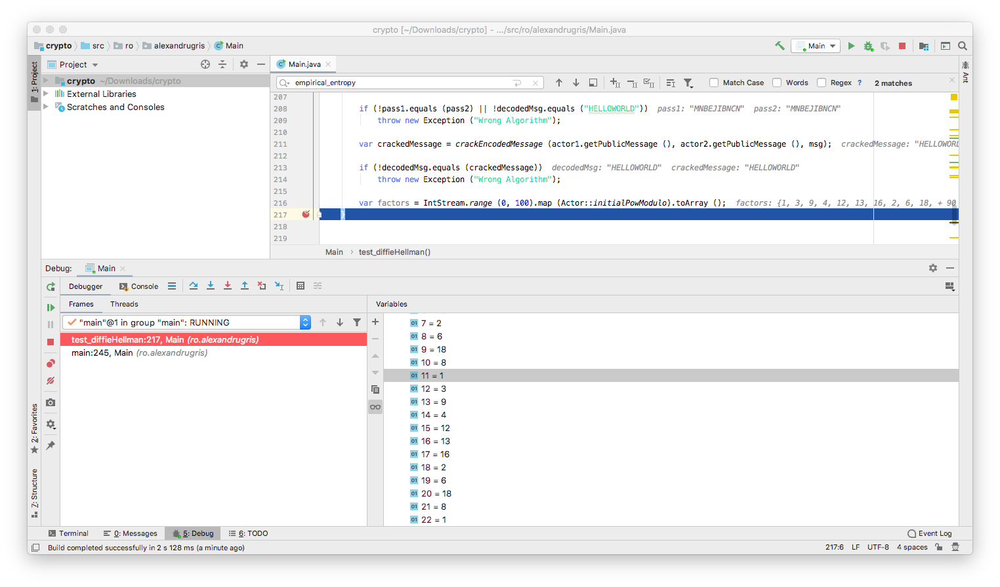

Introduction to Cryptography
A very brief introduction to cryptography.This post covers one-time pads, a little bit of random numbers and the Diffie-Hellman algorithm.
One-Time Pads
One-time pad is a very basic algorithm but virtually unbreakable if properly implemented. The idea is simple: given a message and a shared secret, we create an encrypted message based on the formula encrypted[i] = original[i] + shared_secret[i]. If the shared_secret is purely random and the key is not intercepted, the algorithm is virtually impossible to crack.
However, in practice, we are limited by the following:
- the alphabet of the message is limited
- the alphabet of the shared secret is limited
- due to practical transmission purposes and due to the limitations of random number generators, the length of the
shared_secretis usually less than the length of the original message - if humans are used to generating keys, (e.g. entering passwords), then true randomness is even harder to achieve
The above points generate patterns in the encoded message that can be exploited by an attacker.
Let's consider a 26 letter alphabet, made from letters A to Z. Below you can observe how the secret is looped through in case its length is less than the length of the original message.
static String parse(String msg, String key, BiFunction<Byte, Byte, Byte> f){
// ensure we use only our alphabet
msg = msg.toUpperCase ();
key = key.toUpperCase ();
// remove the white spaces because these decrease the randomness of the message
// and they are not part of our alphabet
byte[] msgb = msg.replaceAll ("\\s+","") .getBytes (StandardCharsets.US_ASCII);
byte[] keyb = key.replaceAll ("\\s+",""). getBytes (StandardCharsets.US_ASCII);
byte[] ret = new byte[msgb.length];
for(int i = 0; i < msgb.length; i++){
ret[i] = f.apply (msgb[i], keyb[i%keyb.length]);
}
return new String (ret);
}
static String encode(String msg, String key){
return parse (msg, key, (m, k) -> (byte)((m-'A'+k-'A') % COUNT + 'A'));
}
static String decode(String msg, String key){
int n = COUNT;
return parse (msg, key, (m, k) ->(byte)((m-k>=0)? (m-k+'A') : (m-k+n+'A')));
}
Entropy
In the previous section we spoke about message randomness. To measure randomness, we introduce the notion of entropy. Entropy is the number of bits needed to optimally encode a given string.
For a purely random string, composed of equally probable symbols, its entropy is given by the number of bits we need to encode each symbol multiplied by the number of symbols in the string. Variable COUNT in the code below is the number of distinct symbols in the alphabet. In our case, for the A-Z alphabet, it is 26.
static double symbol_entropy(){
// log2(x) = log(x) / log(2)
return (Math.log (COUNT) / Math.log (2));
}
static double theoretical_entropy(byte[] sequence){
return symbol_entropy () * sequence.length;
}
But what about the pseudo random number generators? Let's consider the simplest and most commonly used random number generator is the Linear Congruential Generator. It has a very simple, recursive, form: n_i+1 = (A * n_i + B)%m, with n_-1 being called "seed".
It is very important to observe that the seed is the only source of randomness (entropy) in the system, thus the maximum theoretical entropy of this RNG is given by log2(symbols_in_the_alphabet), in our case, for our alphabet, log2(26) == 4.7004. That is because the random function depends only on the first seed and the longest possible sequence it can generate is 26 characters before it loops over. In practice, if wrong As and Bs are chosen, the entropy can be much lower, as seen in the following pseudo-random sequence generated with this RNG: QKGUVFLPBA QKGUVFLPBA QKGUVFLPBA QKGUVFLPBA QKGUVFLPBAQKGUVFLPBAQKGUVFLPBAQKGUVFLPBAQKGUVFLPBAQKGUVFLPBA
static byte randomLetter(int A, int B, int seed){
int length = COUNT;
long lA = A;
long lB = B;
long lSeed = seed;
long n = Math.abs (lA * lSeed + lB) % length;
// there is no additional source of randomness except for the seed
return (byte)(n + 'A');
}
static byte[] random_sequence(int A, int B, int seed, int cnt){
if (cnt <= 0) throw new IllegalArgumentException ("Count must be larger than 0");
byte[] ret = new byte[cnt];
for (int i = 0; i < cnt; i++){
seed = ret[i] = randomLetter (A, B, seed);
}
return ret;
}
Diffie-Hellman
Since the one-time pads are so sensitive to sharing the secret, the question we immediately ask ourselves is how do we transmit secrets over a medium without sharing the secret itself? This question is answered by the Diffie-Hellman key exchange algorithm.
We observe the following:
(p^q)^r = p^(q*r) = p^(r*q) = (p^q)^r
and this property is preserved for modulo n as follows:
(p^q % n)^r % n = (p^r % n)^q % n
This means that, having two actors that communicate over a channel, each actor can reach a consensus on a shared secret, (p^q % n)^r % n = (p^r % n)^q % n, without sharing it explicitly. Let's see it in code:
static class Actor {
private byte[] sharedPass = null;
private int[] internalRandoms = null;
private static int PASS_LEN = 10;
private static int INITIAL_BASE = 5;
private Actor (){
Random r = new Random ();
// STEP: generate a set of internal numbers
internalRandoms = IntStream.range (0, PASS_LEN).map (x -> r.nextInt ()).toArray ();
}
private Actor(int[] randoms){
internalRandoms = randoms;
}
public static int powModulo(int base, int x, int modulo){
// https://en.wikipedia.org/wiki/Modular_exponentiation
if (modulo == 1)
return 0;
int result = 1;
base = base % modulo;
while (x > 0) {
if (x % 2 == 1) {
result = (result * base) % modulo;
}
x = x >> 1;
base =(base * base) % modulo;
}
return result;
}
public static int powModulo(int base, int x) {
return powModulo(base, x, COUNT);
}
public static int initialBaseModulo(int x){
return powModulo (INITIAL_BASE, x);
}
public int[] getPublicMessage() {
// STEP2: share the result of exponentiation on the public channel
return IntStream.of (internalRandoms). map (Actor::initialBaseModulo).toArray ();
}
public void createSharedPass(int[] othersRand){
// STEP3: raise to the other's public message to the power of internal randoms
// to get to the commonly shared password
sharedPass = new byte[PASS_LEN];
for(int i = 0; i < PASS_LEN; i++)
sharedPass[i] = (byte)(powModulo (othersRand[i], internalRandoms[i]) + 'A');
}
public String encodeMessage(String s){
// STEP4: communicate
return encode (s, new String (sharedPass));
}
public String decodeMessage(String msg){
// STEP4: communicate
return decode (msg, new String (sharedPass));
}
public String getPrivatePassword(){
return new String (sharedPass);
}
}
/**
* Implementation of the actual exchange
*/
public static void test_diffieHellman() throws Exception {
var actor1 = new Actor ();
var actor2 = new Actor ();
actor2.createSharedPass (actor1.getPublicMessage ());
actor1.createSharedPass (actor2.getPublicMessage ());
var msg = actor1.encodeMessage ("HELLOWORLD");
var decodedMsg = actor2.decodeMessage (msg);
var pass1 = actor1.getPrivatePassword ();
var pass2 = actor2.getPrivatePassword ();
if(!pass1.equals (pass2) || !decodedMsg.equals ("HELLOWORLD"))
throw new Exception ("Wrong Algorithm");
}
The most important function here is powModulo. We notice that it base^x % modulo == 0, the result of the power function will be 0 from that point on. So we need to avoid that.

Let's look at little bit at the results of powModulo:
- The function starts returning
1. - At each step, it returns a value between
0andn-1. We want to avoid0s because, otherwise,from that point on, the function will always return0. - The function loops through the same values once it returns
1again.

What does it mean for someone who is listening to this conversation to guess our initial, hidden number? It means that he/she guesses a number g such that INITIAL_BASE^g % n is the observed number transmitted over the network. He/she can do this by substituting numbers from 1 ... n in the formula and compare the result with the observed number. It is worth to notice that this g does not necessary need to be the number we initially thought of, but rather any value that satisfies the above condition will also satisfy powModulo (othersRand[i], internalRandoms[i] == powModulo (othersRand[i], g[i])), which employed when generating the shared password.
So let's crack our code:
public static void test_diffieHellman() throws Exception {
/*
[....code from above, new lines added below... ]
*/
var crackedMessage = crackEncodedMessage (actor1.getPublicMessage (), actor2.getPublicMessage (), msg);
if (!decodedMsg.equals (crackedMessage))
throw new Exception ("Wrong Algorithm");
}
public static String crackEncodedMessage(
int[] actor1PublicMessage,
int[] actor2PublicMessage,
String encodedMessage){
var crackedInternalRandoms = new int[actor1PublicMessage.length];
// STEP 1:
// for each element in the public message from the first actor,
// find a number for which the initialPowModulo is equal to the observed value
// O(pass length * modulo = pass length * 2^no_of_bits_in_modulo_prime_number) algorithm:
for(int i = 0; i < crackedInternalRandoms.length; i++) {
for (int j = 0; j < COUNT; j++) {
if (Actor.initialPowModulo (j) == actor1PublicMessage[i]) {
crackedInternalRandoms[i] = j;
break;
}
}
}
// STEP 2: create an actor with these randoms as the internal password
var actor3 = new Actor (crackedInternalRandoms);
// STEP 3: use this fake internal password and the observed responses from
// the second actor to re-create the shared password
actor3.createSharedPass (actor2PublicMessage);
// STEP 4: decode the message
return actor3.decodeMessage (encodedMessage);
}
Since we want for someone in the middle to be as hard as possible to guess which was the initial hidden random number we started with, we want to force them to run through the longest number of trials and errors, thus we want the longest possible sequence of non-1s results, that is we want 1 to be reached again when x==n-1, while avoiding premature cycles.
Fermat's Little Theorem tells us that INITIAL_BASE^(n-1) % n==1 when n is prime and INITIAL_BASE is not a multiple of n.
Now, even if (INITIAL_BASE^(n-1) mod n) == 1, it might be that 1 is also reached for factors of n-1. For example, if we set INITIAL_BASE = 3, n = 23, we have ones also for 11. In practice, INITIAL_BASE can be a small number, good choices being 2, 3, 5, 7.

This example demonstrate three points:
- Why we need to choose a large prime number for
n, in our case theCOUNTvariable, usually selected as a primen=2*q+1, where q is another large prime - Why factoring
n-1is important (the factors are the points where loops might start, hence then=2*q+1selection) - Why Diffie-Hellman does not protect against man-in-the-middle. There's nothing stopping an attacker to set himself/herself as a middleman between the two communicators. There's no means for each of the parties communicating to validate their identity to each other.
By today's standards, a 2048 bit prime number is the minimal recommended requirement to effectively protect against a brute-force attack and asymmetric encryption is the standard in cryptography.